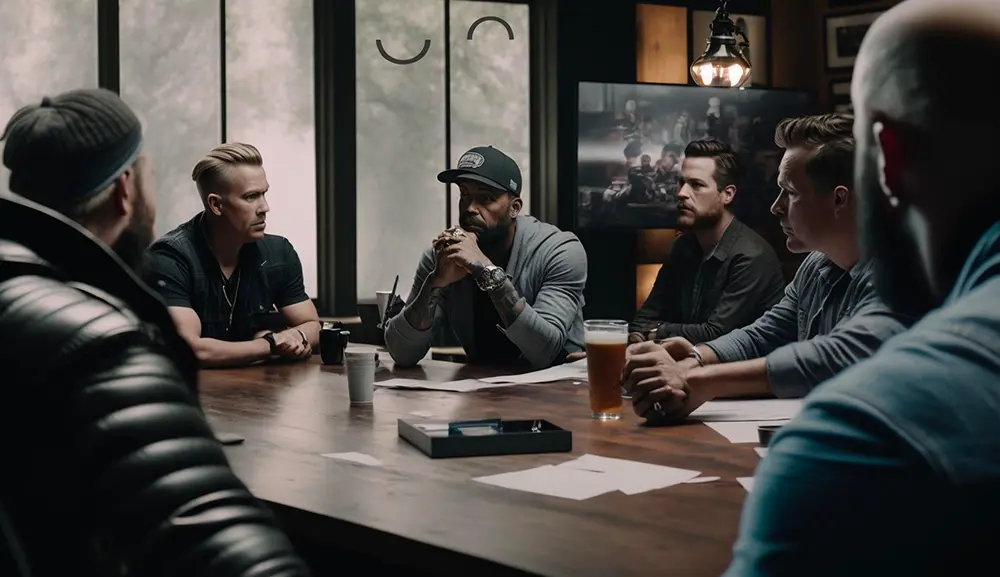
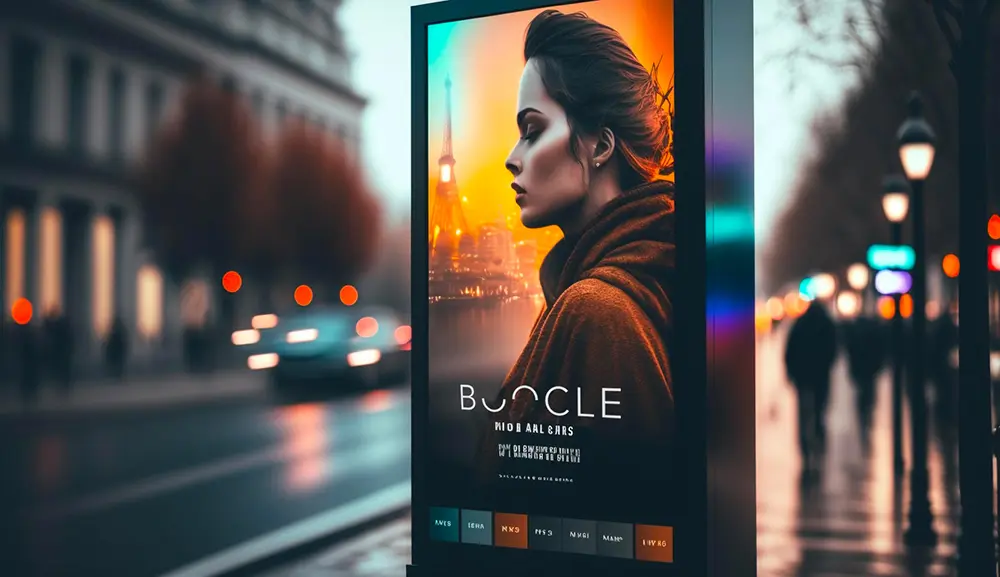

"I Have a Dream"
May 07, 2023
"I Have a Dream" said Martin Luther King.
But for me, it wasn't just a dream, it was a vision.
A vision that materialized before my eyes, on Montaigne Avenue in Paris.
A vision that made me realize there was a missing piece in the wall of future communication.
In front of this luxury boutique, I saw a magnificent screen, vibrant with colors and incredible image quality.
But that's not what captivated me, it was the looping video embedded in it.
An 8-second loop accompanied by a 24-second soundtrack, repeating endlessly, as if time was suspended.
It was hypnotic, almost magical.
And I realized that this was the content suited for this medium of future communication.
A message that loops, that catches attention, that leaves an impression.
Effective communication that doesn't require long speeches.
The woman in the loop, wore a dress that extended infinitely, held an hourglass in her hand.
It was a symbol of eternity, of permanence.
And I knew that I had to create such a loop to address this communication need.
I'm speaking to the world of luxury, without naming them.
But I know that this method of communication can be used in many fields.
In advertising, art, film, politics...
Everywhere where one wants to make an impact in a simple and effective way.
And I hope that you too, will be able to see the vision I had that day...
#digitalmarketing #innovation #luxury #DOOH #storytelling

Artists Collaboration
May 05, 2023
My dear collegues, it's to have fun with Boocle
Imagine a revolution for talented artists in search of innovation!
As a reminder, Boocle has created an internationally patented algorithm to produce perfect video loops.
Boocle will soon be subsidized to create new models.
But right now, we're looking for future partners.
Artists, directors, ready to collaborate and create together.
Luxurious, artistic, cinematographic...
Profiles intermingle.
No spoilers, but exciting meetings are underway.
So, dear network, open the doors wide!
Don't hesitate and talk about Boocle to your filmmaker friends.
Send me your dreams, your creative madness, your revolutionary aspirations.
A private message, an email, and the adventure begins.
Who knows?
Perhaps the talented artist looking to "loop" is among your acquaintances!
It's a collaboration, an exploration.
New artists, directors in search of innovation, welcome!
See you soon on LinkedIn!
And together, let's dive into the opportunities offered by Boocle.
PS: There are only men in the illustration photograph, but of course, Boocle is open to female artists!!
#talentsearch #opportunities #collaboration #creativity #hiring
Starfounders
May 4, 2023
Hello everyone!
Today, I want to share my personal experience of career change with you.
I left behind my artist's costume to become an entrepreneur, and it hasn't been easy.
Fortunately, I was able to rely on StarFounders to help me train and build my startup.
Amine Bounoughaz and Walid Behar, the founders of Starfounders, provided me with valuable advice on writing my pitch deck, finding my advisory board, and understanding how to secure public and private funding.
Through their weekly immersion sessions, I learned a lot, and I continue to learn.
In addition to that, I met other entrepreneurs within the accelerator, with whom I could discuss our challenges and exchange tips.
All in all, choosing Starfounders has been an excellent decision for me, and I highly recommend it to anyone looking to venture into entrepreneurship.
Do not underestimate the importance of training and seeking guidance in your entrepreneurial endeavors!
#entrepreneur #fundraising #starfounders #boocle #startup

The Dooh Revolution
May 3, 2023
The Dooh Revolution: Boocle, the Key to Captivate Moving Customers.
DOOH is rapidly advancing.
Investments increased by 44.1% in France in 2021.
Stores, streets, train stations, and airports are being equipped with screens.
But the content is often poorly adapted to "passing" customers.
The problem: Linear videos truncate the message.
Customers often see the end before the beginning, missing the main point.
The solution: Boocle, our patented video loop.
It offers an immersive, hypnotic, and captivating experience.
No interruptions, no jumps.
Customers are immersed, no matter when they look.
The opportuniy: Boocle adapts to DOOH, reinventing the way brands and artists communicate.
The video loop creates a strong emotional connection, generating a memorable impact.
The promise: By integrating Boocle into DOOH, campaigns become more effective, engaging, and suited to the moving public.
Join us to discover how Boocle can transform your DOOH projects and captivate your customers.
Together, let's change the face of advertising.
#dooh #boocle #innovation #advertising #engagement #loopedvideo